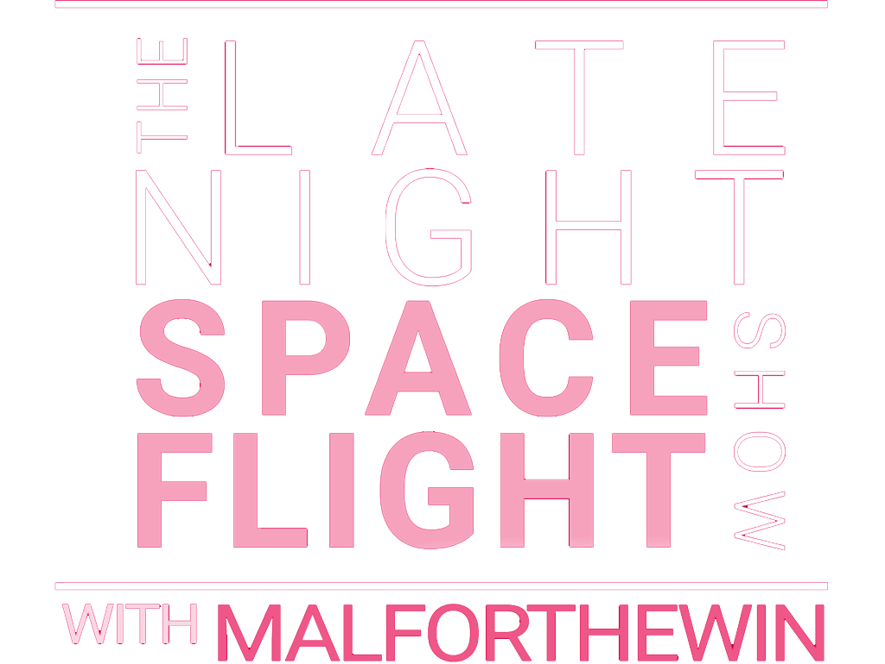
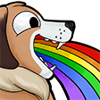

Real astronomy. Live in the galaxy. Every flight, a real destination — no slides, no stock footage, just 400 billion star systems and a dog with opinions.
This Is a Show, Not a Stream
Late night structure. Live science. Leo in the producer's chair.
Most space content gives you slides, stock footage, and a voiceover. This is something different.
Late Night Space Flight is a live Twitch show about real astronomy—black holes, neutron stars, stellar nurseries, the galactic core. Each episode, we choose a real astronomical object because it’s scientifically interesting. Then we fly there. The visuals on screen are the game’s rendering of that object. The conversation is about the real science. The game is the vehicle. The science is the destination.
Elite Dangerous is a massive, open-world space flight simulation set in a 1:1 scale, realistic recreation of the Milky Way — 400 billion star systems, no set path, and a player-driven persistent universe. Start with a small ship and trade, fight, mine, or go full pirate.
On Late Night Space Flight, we use it for one thing: exploration. We fly to real astronomical objects, at their correct galactic coordinates, and talk about the science.
And it only happens on Late Night Space Flight.
Who's Behind Late Night Space Flight
Every show needs a crew.
You know the what. You know the where. You've seen the starfield and you've heard about the black holes. But who's actually running this thing? Good question. Meet the crew: one host with late night energy, one producer who's been here since day one, and one very good dog who has never explained where she got that Thargoid artifact. We don't screen our calls and we don't rehearse our banter. What you see is what we've got. And honestly? We're just as curious about where this is going as you are.
MalForTheWin
Late night host energy, not streamer energy. Observational humor, genuine scientific curiosity, warm with chat, and occasionally cheeky.
Leo
A memorial to Mal's last service dog (Leo, 2007–2021), he's baked into every emote. If Mal is flying, he's in the seat and on duty. Someone has to keep an eye on the mission.
Ripley
Belgian Malinois, service dog in training, doggo-cam regular. She runs !fetch. She once brought back a Thargoid artifact and has declined to explain where she found it. When she wanders into frame, it's a moment.
The Universe Has Good Material
Real science, real objects, real coordinates.
Every flight has a destination chosen for scientific interest, not game progression. Black holes. Neutron stars. The galactic core. Stellar nurseries where new stars are being born. We fly there, we look at it, we talk about the science. No slides, no stock footage—just the real object rendered live.
Sagittarius A*
Sagittarius A* sits at the centre of the Milky Way, 26,000 light-years from Earth, with a mass of approximately 4 million solar masses. Its event horizon spans roughly 44 million kilometres. In 2022, the Event Horizon Telescope collaboration released the first direct image of the object.
On this show, we flew there instead.

The Constellation
Chat is the studio audience, and every member is a point of light.
Late Night Space Flight doesn't have viewers. It has The Constellation—a community of regulars who show up, participate, and shape what the show becomes. They heckle. They ask questions. They have Ripley fetch things. They hold strong opinions about white dwarfs. This isn't parasocial. This is a nightly gathering of people who care about the same things.



40 custom emotes, available to all subscribers.
Every one is Leo — the producer, the permanent co-presence, the face of the show.
The Constellation is the live audience of Late Night Space Flight. They show up in chat, they heckle the host about stellar classifications, they know Ripley by name, and they have opinions. Strong opinions. About astrophysics, about biscuits, about which episode was the best one.
Every member is a point of light. Community lore accumulates and is recorded at our home, the Pathamon system. Regulars are remembered. Newcomers are welcomed.
It is not parasocial. It is genuinely communal. There is a difference.
By The Numbers
Audience data, engagement metrics, and community reach.
Numbers don't tell the whole story, but they tell part of it. Here's what Late Night Space Flight looks like by the metrics—average viewers, total watch time, community growth, and engagement rates. Updated each season.
Prior campaign performance data (CTR, promo redemptions, conversion metrics) available on request.
Metrics reflect legacy data (pre-hiatus). 2026 season data will be updated as flights launch.